RFLS-100S
RFLS-100S
RFLS-100S
Compact RF Admittance Level Switch (Solids)
Space-saving compact coat-guard RF admittance switch designed for bulk solids, powders, and hopper high/low level detection with driven shield buildup immunity.
 RFLS-100L
RFLS-100L
RFLS-100L
Compact RF Admittance Level Switch (Liquids)
High-reliability RF admittance point level switch for liquids, oils, and viscous slurries with continuous coat-guard buildup immunity.
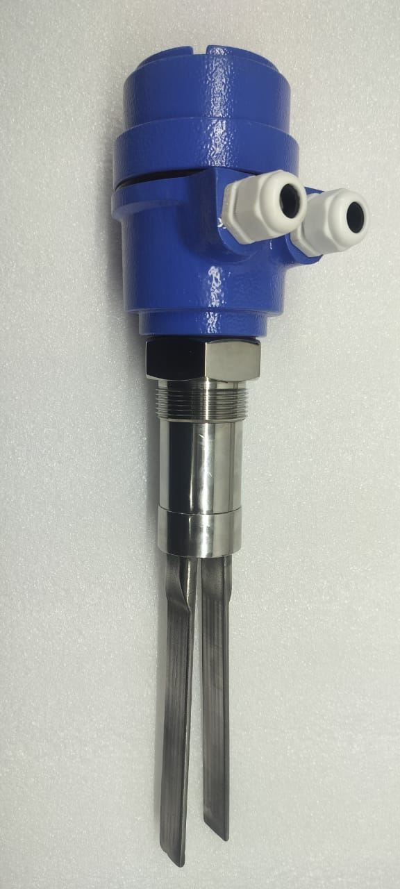
VFLS-200SVFLS-200S
Standard Vibrating Fork Level Switch (Solids)
Heavy-duty piezoelectric vibrating tuning fork sensor engineered for reliable point level detection in free-flowing solids, grains, and powders.
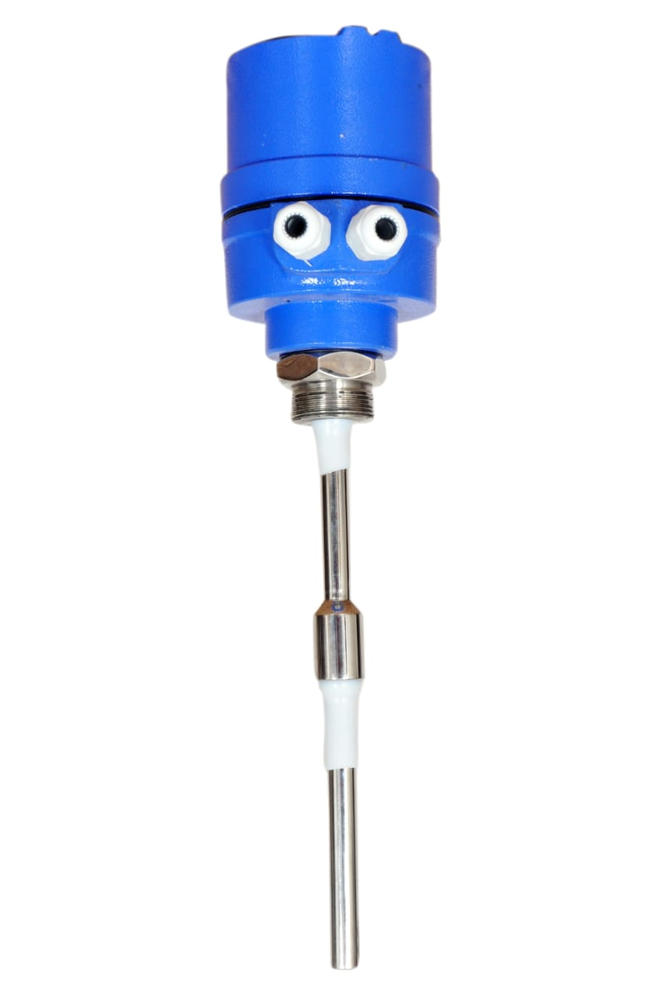
RFLS-300SRFLS-300S
Standard RF Admittance Level Switch (Solids - Rod Type)
Full-size industrial rod probe RF admittance switch with Driven Shield technology for abrasive bulk solids, fly ash, and clinker silos.
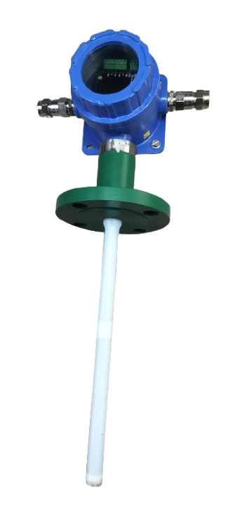
RFLS-300LRFLS-300L
Standard RF Admittance Level Switch (Liquids - Full PTFE)
Full virgin PTFE insulated RF admittance switch engineered for harsh acids, caustic chemicals, resins, and corrosive liquids.
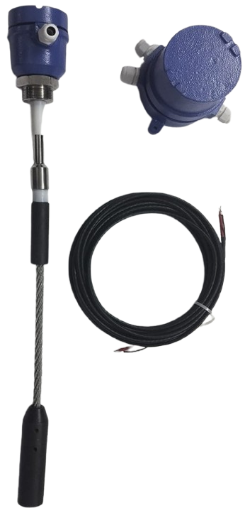
RFLS-300SRRFLS-300SR
Rope Type RF Admittance Level Switch (Deep Silos)
Flexible stainless steel wire rope sensor with bottom ballast weight, designed for high/low point level detection in tall grain silos and deep tanks.
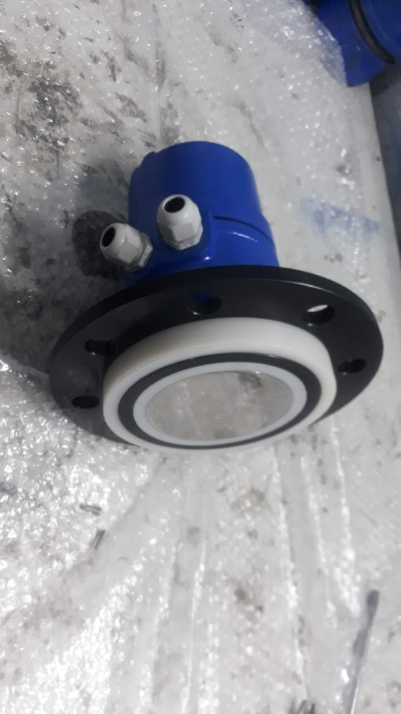
RFLS-300SDRFLS-300SD
Disc Probe RF Admittance Level Switch (Chutes & Bins)
Flush disc probe construction designed for side-wall mounting in transfer chutes, transport pipes, and high-impact material conveyors.
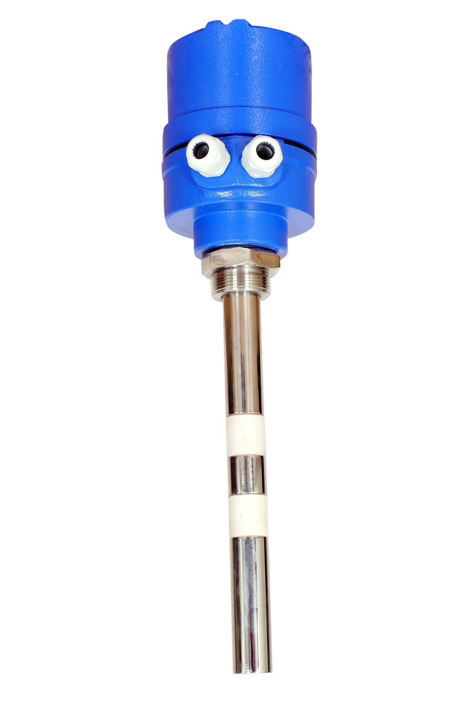
RFLS-300HDRFLS-300HD
Heavy Duty RF Admittance Level Switch (High Impact)
Extra-reinforced 25mm solid steel probe with ceramic shielding designed for extreme mechanical impact in mining, steel, and cement industries.
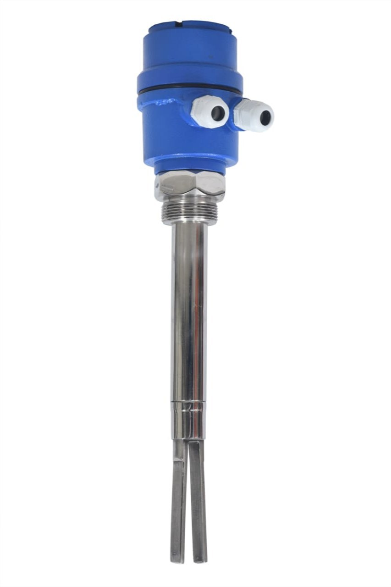
VFLS-400SVFLS-400S
Compact Vibrating Fork Level Switch (Grains & Powders)
High-sensitivity compact tuning fork level switch optimized for light bulk powders, plastic pellets, food grains, and small vessels.
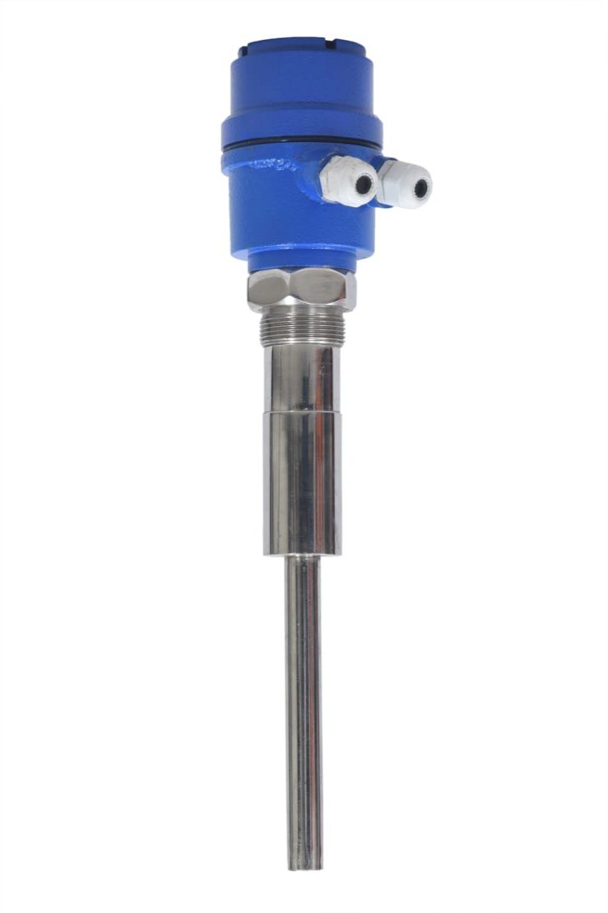
VRLS-500SVRLS-500S
Standard Vibrating Rod Level Switch (Solids)
Single vibrating rod sensor engineered to prevent granular material wedging and bridging in plastic pellets, grains, and coarse bulk solids.
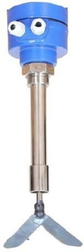
RPLS-600SRPLS-600S
Rotating Paddle Level Switch (1/2/3 Vane & J-Type)
Robust electro-mechanical rotary paddle level switch with magnetic slip clutch protection for bins, silos, and grain storage hoppers.
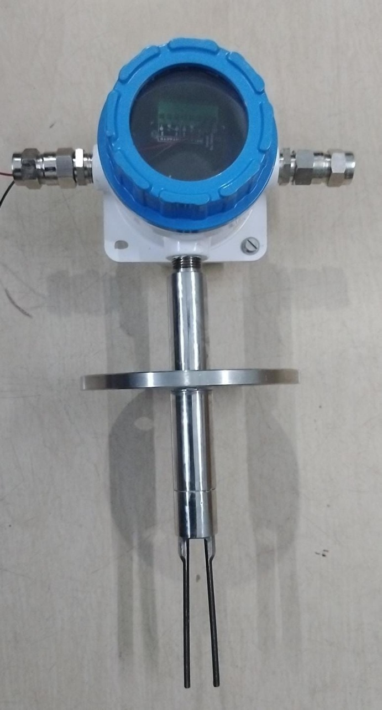
VFLS-700LVFLS-700L
Compact Liquid Vibrating Fork Switch (ATEX / Flameproof)
ATEX / Flameproof certified piezoelectric liquid tuning fork switch for point level alarm in hazardous petrochemical, chemical, and gas installations.
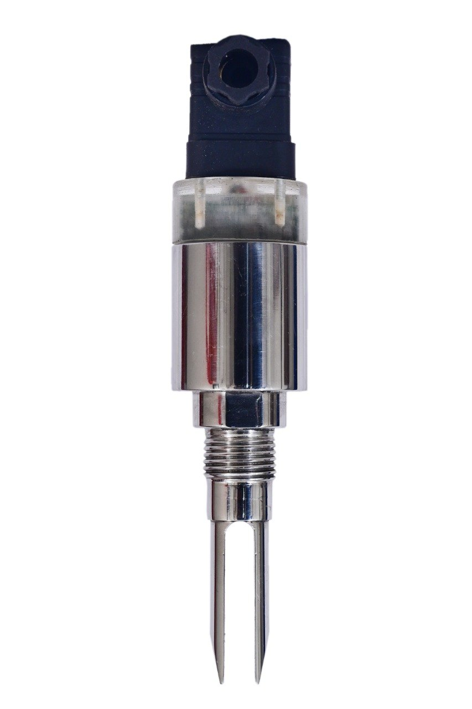
MVFLS-800LMVFLS-800L
Miniature Vibrating Fork Level Switch (Liquids - 40mm)
Ultra-compact 40mm fork sensor designed for tight pipelines, OEM dosing equipment, hygienic pharmaceutical tanks, and laboratory skids.
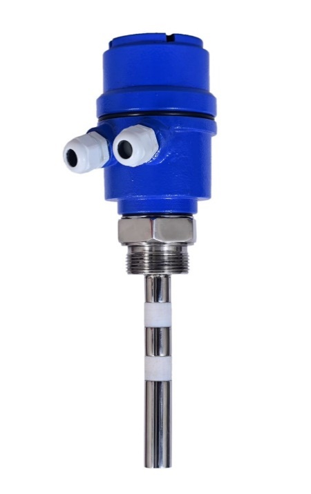
CPLS-900SCPLS-900S
Capacitance Level Switch (Bulk Solids & Bins)
Economical and rugged capacitance point level switch designed for reliable detection of bulk solids, cement, and granular powders.
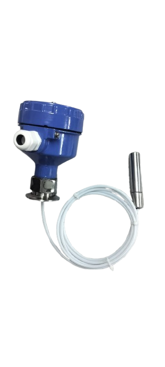
MCLS-900LMCLS-900L
Miniature Capacitive Level Switch (Liquids & Slurries)
High-frequency capacitive tip sensor with build-up suppression for thin pipelines, oils, liquids, and slurry overfill protection.
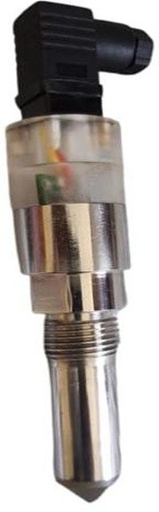
IPLS-1000LIPLS-1000L
Infrared Optical Point Level Switch (Liquids & Oils)
Prism total internal reflection optical infrared sensor for clear liquids, fuels, lubricants, hydraulic oils, and high-purity media.
 MFLT-1100L
MFLT-1100L
MFLT-1100L
Magnetic Float Level Transmitter (Continuous 4-20mA)
Continuous liquid level transmitter with magnetic float reed-chain sensor, 4-20mA 2-wire / RS485 Modbus output for liquid storage tanks.
 MFLS-1300L
MFLS-1300L
MFLS-1300L
Top Mounted Magnetic Float Level Switch (Multi-Point)
Vertical guide-pipe magnetic float switch with up to 4 independent level alarm setpoints for water tanks, diesel reservoirs, and sumps.
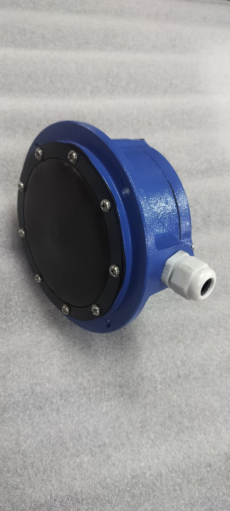
RDLS-1400SRDLS-1400S
Rubber Diaphragm Level Switch (Bins, Silos & Chutes)
High-flexibility neoprene rubber diaphragm pressure switch for non-abrasive bulk solids, grain chutes, plastic powders, and feed hoppers.
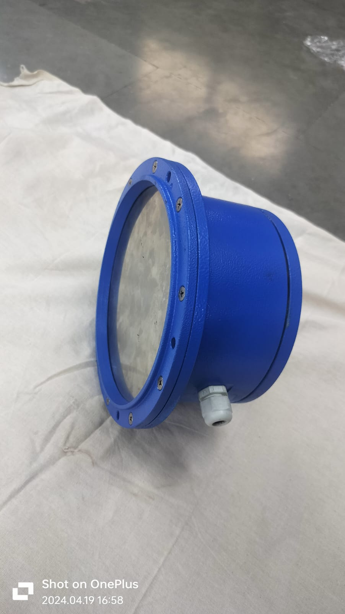
SDLS-1500SSDLS-1500S
Stainless Steel Diaphragm Level Switch (High Temp Powders)
Heavy-duty SS304 stainless steel diaphragm level switch designed for hot powders, abrasive ores, cement, and foundry sand bins.
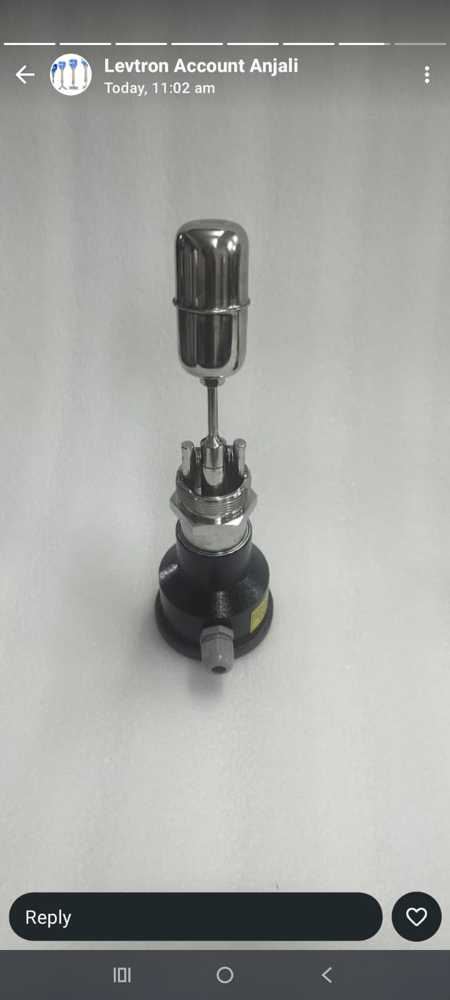
HFLS-1600LHFLS-1600L
Horizontal Magnetic Float Level Switch (Side Mounted)
Glandless magnetic repulsion side-mounted float switch for high/low liquid alarm, pump automation, and boiler feed tanks.
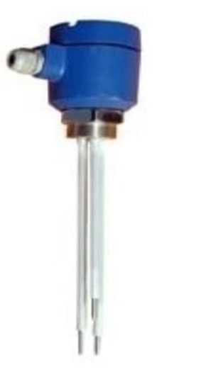
CTLS-1700LCTLS-1700L
Multi-Channel Conductivity Level Controller
1, 2, or 4 channel conductive probe controller for boiler feed tanks, water sumps, and conductive industrial fluids with AC excitation to prevent electrolysis.
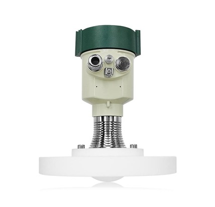
FMLT-1800LS80GHz Radar Level Transmitter (Solids & Liquids)
State-of-the-art 76-81GHz FMCW radar with narrow 3° beam angle and ±1mm precision. Penetrates dense dust, vapor, foam, and high temp (+200°C) up to 120m.
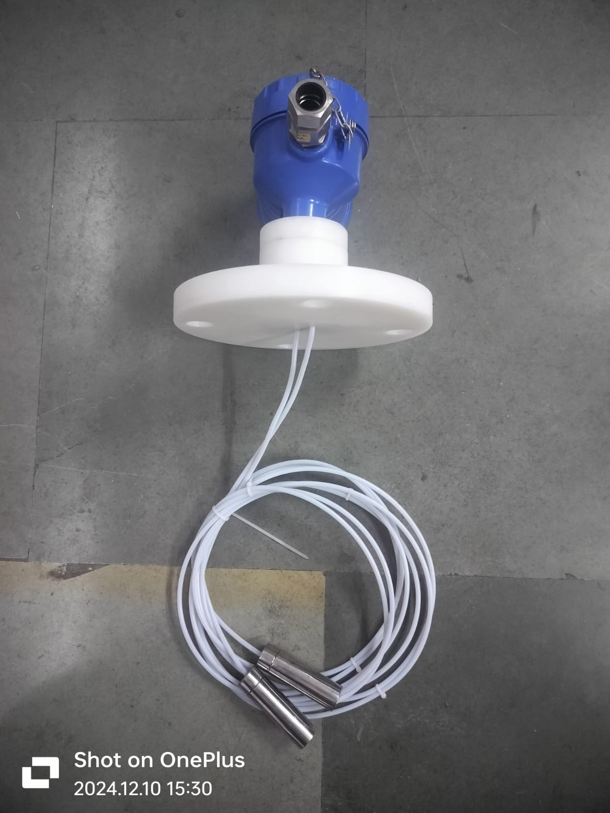
CPLT-1200LContinuous Capacitance Level Transmitter (Liquids)
Continuous 4-20mA level transmitter with full PTFE sleeve. Rigid probe up to 3m and flexible rope probe up to 30m for acids, water, oils, and chemical liquids.
 CPLT-1200F
CPLT-1200F
Fuel Level Transmitter (Diesel, Petrol & Oils)
Concentric SS316 grounding tube design providing ±0.5% high accuracy in DG set tanks, fuel bunkers, solvents, and non-conductive plastic tanks. Ex-d Flameproof IP66.
 HSLT-2000L
HSLT-2000L
Hydrostatic Submersible Transmitter
IP68 submersible stainless steel probe with flush 316L SS diaphragm and atmospheric vent tube cable. Ranges 0-1m to 0-200m H2O for deep wells, rivers, and sumps.
 LULT-2300L
LULT-2300L
Non-Contact Ultrasonic Level Transmitter
Non-contact acoustic level transmitter for liquids and open channels. Built-in graphic LCD, 4-20mA, RS485 Modbus, and 2 programmable alarm relays. Range 5m to 40m.
 LMLT-2100LT
LMLT-2100LT
Magnetic Level Gauge & Indicator (MLI)
Side & Top mounted non-invasive chamber with bicolor magnetic flappers or follower capsule. Safe visual indication for aggressive, flammable, toxic, and pressurized tanks.
 LTLI-2200L
LTLI-2200L
Tubular Level Indicator (LTLI-2200L)
Simple and reliable device for direct visual reading in atmospheric or pressurized tanks with 100% PTFE bush packing, 360° Tie-rods/C-channel guards, and C/C distance up to 2000mm.
 FBLI-2400L
FBLI-2400L
Float & Board Level Indicator (FBLI-2400L)
Designed for accurate, reliable & trouble-free float operated technique in large non-pressurized storage tanks. Measuring range up to 25m with direct CI pointer or follower magnet.
 QYB100
QYB100
Piezoresistive Pressure Transmitter (QYB100)
Silicon piezoresistive sensor in stainless steel housing with CE approval. Ranges from 100mbar to 1000bar, outputs 4-20mA / 0-10V / 0-5V, IP65/IP68.